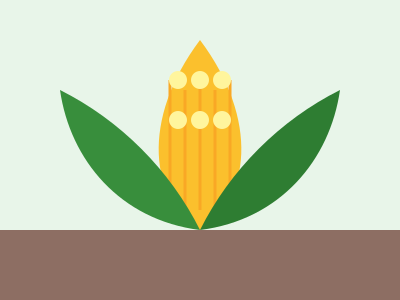

Prochaine récolte
Maïs doux — parcelle B
Dans -- jours
Aujourd'hui
Date inconnue
Corvées de la semaine
- Arroser les planches de salades chaque matin
- Désherber la parcelle B autour des maïs
- Ramasser les œufs du poulailler
- Ranger les outils dans la remise